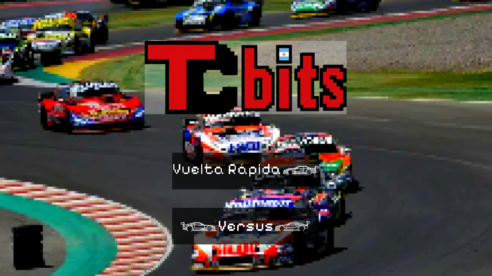
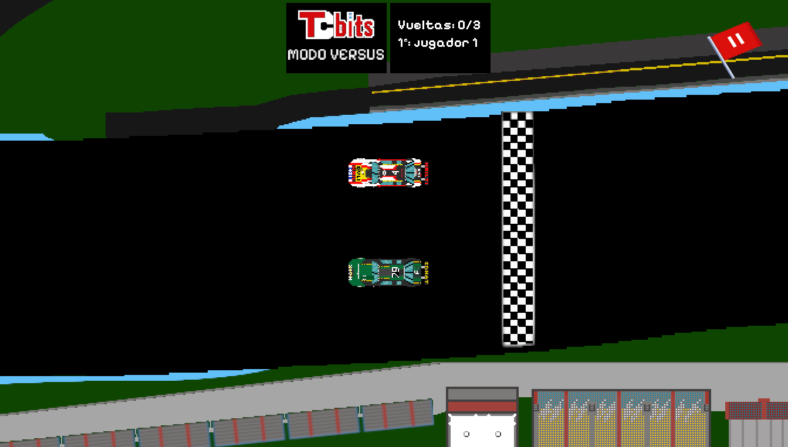
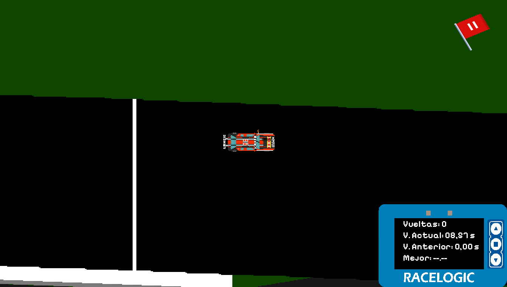

Juego carreras 2D
Tecnologías: Java 21, Eclipse, GIMP
Consigna
Desarrollar un videojuego en java 2D utilizando los conocimientos adquiridos en la programación orientada a objetos. El juego debía ser atractivo y funcional, ser presentado a modo de venta, defender y explicar el código. También se debía utilizar una metodología de trabajo, en este caso Kanban.
Capturas del Proyecto

Menu principal del juego.

Recorte en el juego modo versus.

Recorte en el juego modo vuelta rápida.
¿Cómo fue el desarrollo?
Con un grupo de compañeros se dividieron las tareas y se gestiono mediante kanban.
Tareas realizadas
- Diseño del logo, botones del menu pricipal, UI, autos y circuitos.
- Armado de la lógica de movimiento del auto y movimiento de la cámara.
- Colocado del sonido para el menú y del auto dentro del juego.
- Armado del sistema de archivos para guardar tiempos.
Link al repositorio GitHub